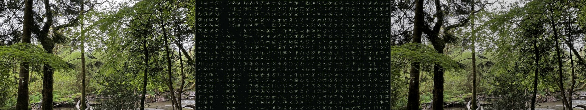

Nid wy’n byw un amser nac yn unlle’n gyfan oll: Mae darn o hyd ar grwydr neu ar goll.
T. H. Parry-Williams, “Anwadalwch”
Dafydd Sills-Jones
Artist · Filmmaker · Researcher
I work across documentary, virtual production, creative technologies and minority-language media, through filmmaking, artistic practice, research and editorial work.
Moving Image Works
A chronological selection of films, installations and mobile works.
![Thumbnail for Anwadalwch [Fickleness]](https://i.ytimg.com/vi/qruWjfX20rU/mqdefault.jpg)


![Thumbnail for Y Trydydd Masg [The Third Mask]](https://i.ytimg.com/vi/YiXHvbbyV-g/mqdefault.jpg)
![Thumbnail for Y Dosbarth Melyn [The Yellow Classroom]](https://i.ytimg.com/vi/gR3a2pCtD5k/mqdefault.jpg)
![Thumbnail for Y Gors [The Bog]](https://i.ytimg.com/vi/XRN_jdQ3gWY/mqdefault.jpg)


![Thumbnail for Pwy Yw T.H.? [Who is T.H.?]](https://i.ytimg.com/vi/UyinTnaaqIA/mqdefault.jpg)
Portals / Traces
Real place, digital capture, virtual production.
Portals/Traces is a research and practice project exploring how virtual production, LiDAR, photogrammetry, AI image systems and live performance can be developed in relation to specific places and communities.

Research
My research explores relationships between place, memory, language and emerging forms of screen practice.
Contact